Ashen Path: Dark Blade is a dark soulslike for your phone. You are an ember pilgrim who wakes in the ash at the foot of a stair. At the top stand the Pale Throne and a king who could not bear to lose anyone. Between you lie ten worlds, ten keepers, and people who remember who they once were. Every enemy can kill you. Learn.
Everything known about the game is gathered here: every number comes from the code of version 2.0.0, every quote from the game itself.
- Beginner's Guide
- Combat
- Difficulty
- Worlds
- Keepers
- Weapons
- Characters
- The Alter World
- The Story of Ashen Path
- Frequently Asked Questions
Featured article
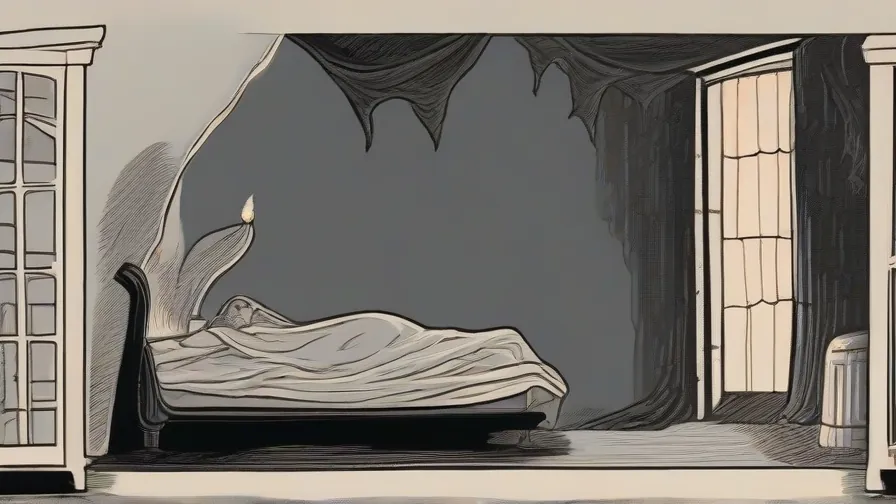
The Alter World
The world of the hero's rage: the same map, only burning from inside. Four visits, and no two alike.
Keepers
The ten bosses of Ashen Path: shared combat rules, phases, health on each difficulty.

Ida
The lookout on the roofs. For forty winters she was the Warden's eyes. Sharp-tongued, light on her feet.

Beginner's Guide
Where to start: controls, shrines, essence, flasks and the first rules of survival.
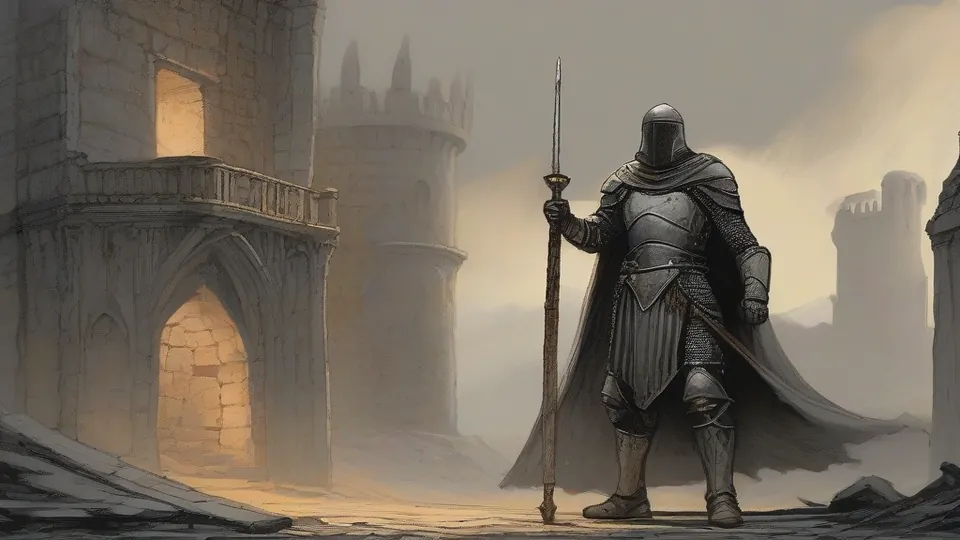
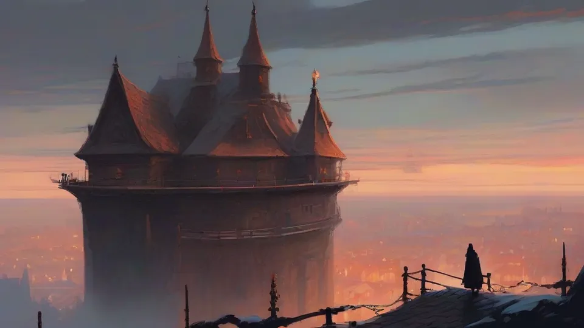
Ashfall Village
World 1. A feast that has not ended for a hundred years, and the Ashen Warden at the gate.

Packs and Camps
Enemies come in groups. How the alarm works, how many strike at once and how to pull a pack apart.
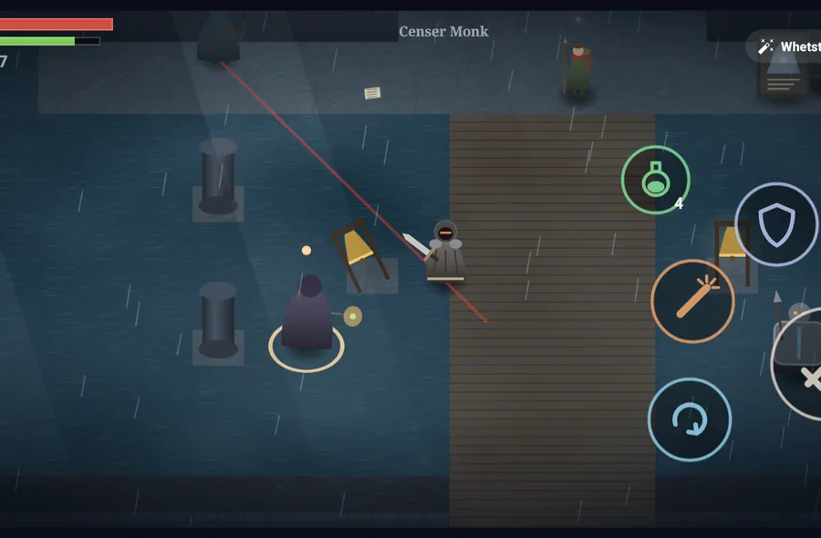
Difficulty
Story, Normal and Ashen: what changes, with a table of every window and multiplier.
Did you know…
- ...that in the Alter World flasks don't work, and only your own blows heal you? →
- ...that resting at a shrine revives every regular enemy you have killed since your last rest, but not elites or keepers? →
- ...that if you die a second time before reaching the essence you left behind, it is gone for good? →
- ...that the game "remembers" a button press for 0.15 seconds and performs it as soon as the current move ends? →
- ...that on Ashen a regular enemy's blow takes a fixed share of your health, and levelling only helps up to the level of a "normal" hero? →
- ...that elites give four times as much essence as the same regular enemies? →
- ...that the Hollow King has 3.8 times the health the normal formula would give him — the largest adjustment in the game? →
- ...that for forty winters Ida was the Ashen Warden's eyes, signalling to him from the roof: "Another one"? →
- ...that once a day Maelis offers you an ember for the road at a shrine — one of three gifts to choose from? →
- ...that only two or three regular enemies can wind up at you at the same time, while the rest wait their turn? →
- ...that the parry window is 0.53 seconds on Story and only 0.12 on Ashen? →
- ...that on Ashen difficulty there are no rings or flashes, and you read a windup only by the enemy's body and by sound? →
- ...that after a perfect dodge you have 0.67 seconds for a counter strike with double damage and armour? →
- ...that Master Veil cannot be killed in the real world — twice his health fills up again, and the third time the Alter World begins? →
- ...that the Ashen Warden's charge never stops — lead him into a pillar and he breaks on the stone and is open for more than two seconds? →
- ...that the whole first world — three maps, four shrines and ten secrets — can be played before buying the full game? →
Ten Worlds
 The Grey CrossingWorld 2. The road, the Last Lodging inn, the toll bridge and the ferry in the mist.
The Grey CrossingWorld 2. The road, the Last Lodging inn, the toll bridge and the ferry in the mist.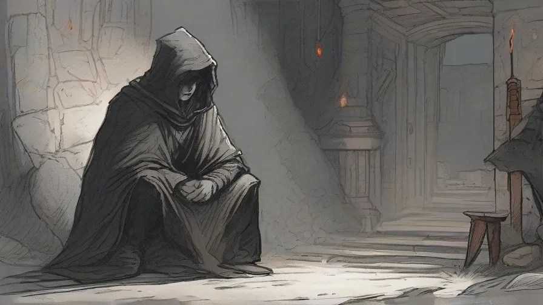
Drowned ChapelWorld 3. A chapel the river walked into. Bells, cells and the Bell Matron.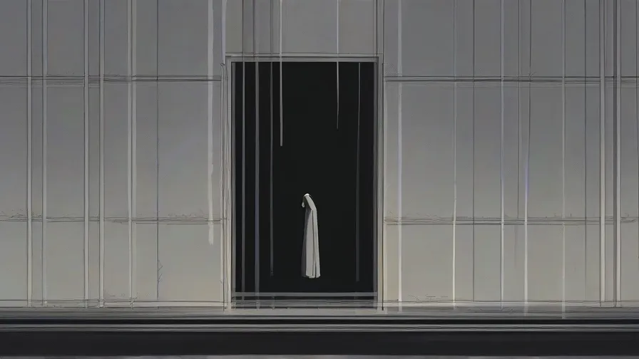
The Grey LazaretWorld 4. The Grey Sickness hospital on a cliff, a stair of forty steps and the first Alter World.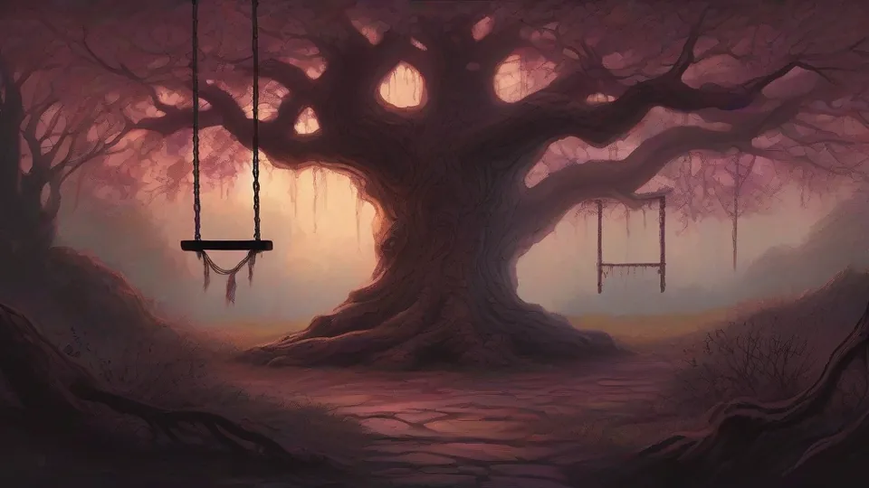
ThornwoodWorld 5. The queen's garden, overgrown with thorns. A swing on the oak and the Rootmother.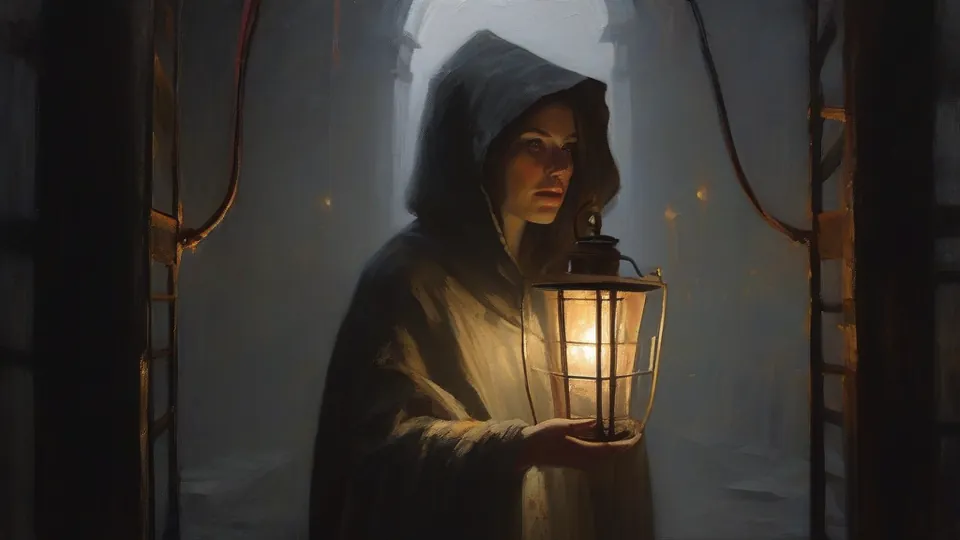
The Coal MinesWorld 6. The mountain under the keep: the miners' quarter, the lift cage, the rails and the Great Vein.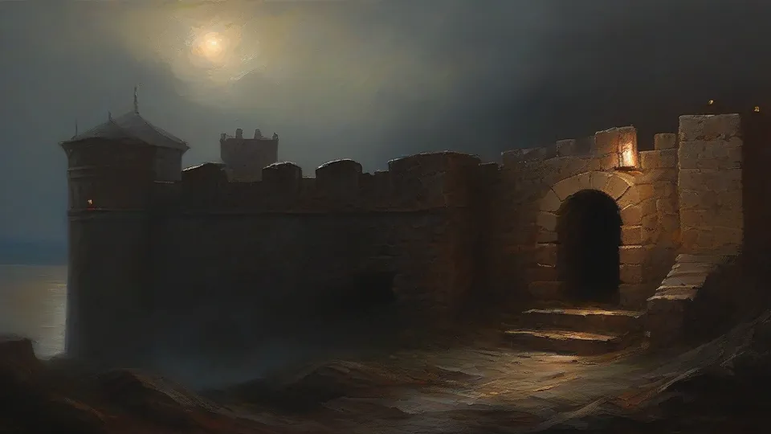
Ember KeepWorld 7. The garrison, the forge, the ballista gallery and the Champion Hall. The bottom of the story. The Field of SwordsWorld 8. A white slope, thousands of pilgrims' swords and the Nameless.
The Field of SwordsWorld 8. A white slope, thousands of pilgrims' swords and the Nameless.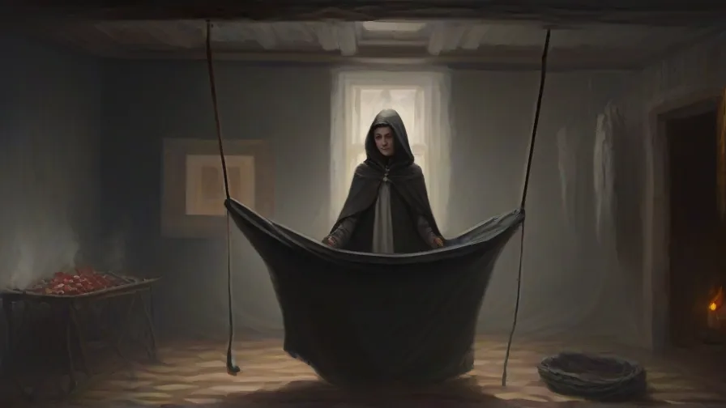
Aurel's PalaceWorld 9. The royal city on the summit, a nursery without a swing, the headsman's yard and a confession.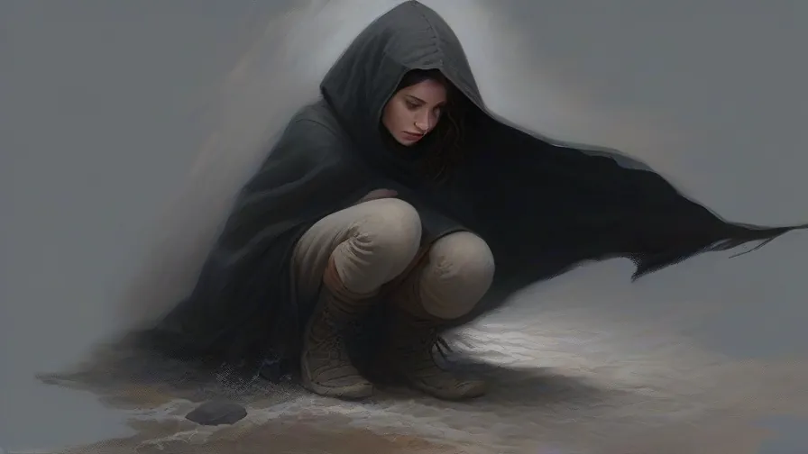
The Pale ThroneWorld 10. The Last Stair, forty steps and the Hollow King.Keepers
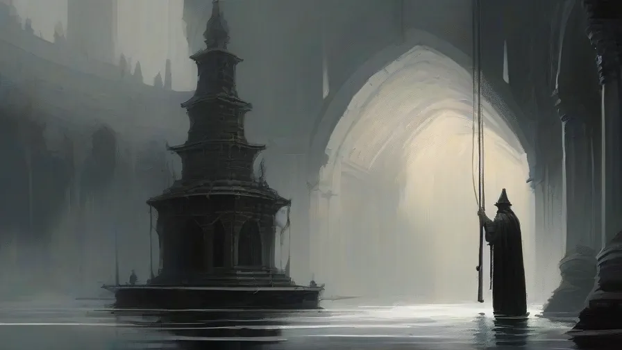
The Bell MatronMother Isolde of the Tolling. Answer the toll and the nave staggers.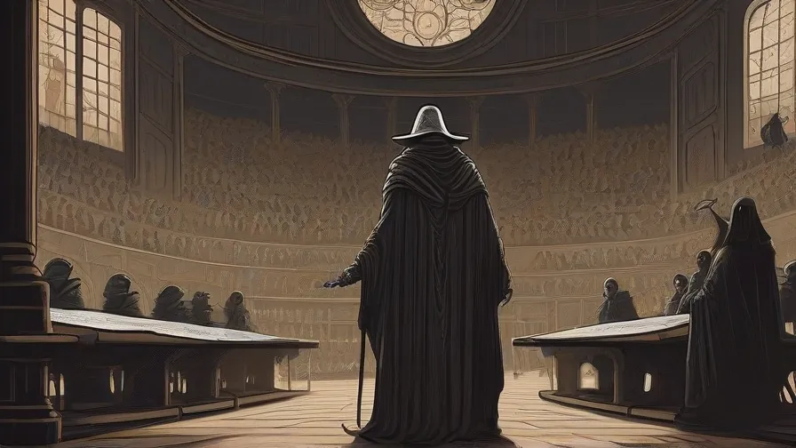
Master VeilThe Queen's Physician, who cannot die in the real world.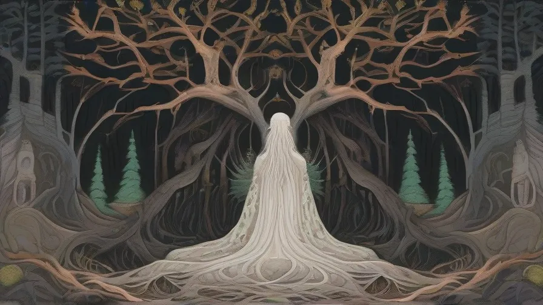
The RootmotherQueen Liane on a throne of roots. Cut the heart-roots, or she heals.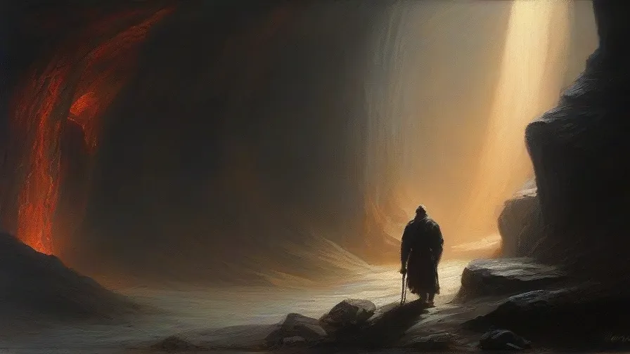
Overman GormThe Twins' Father in the Great Vein: pick, glowing crack, a charge out of the dark. The Keep ChampionsSer Hal and Ser Bryn, the Twin Oaths. A fight against two keepers at once.
The Keep ChampionsSer Hal and Ser Bryn, the Twin Oaths. A fight against two keepers at once.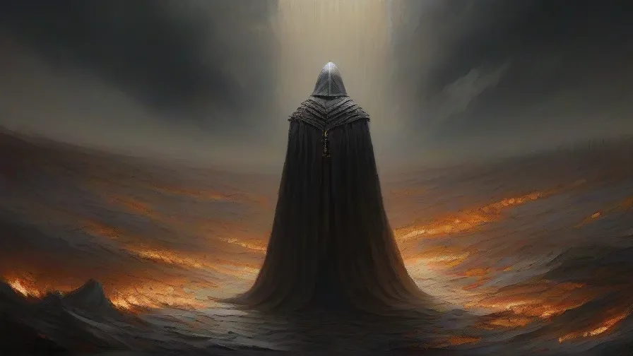
The NamelessA giant made of pilgrims' swords. Each sword he draws strikes its own way.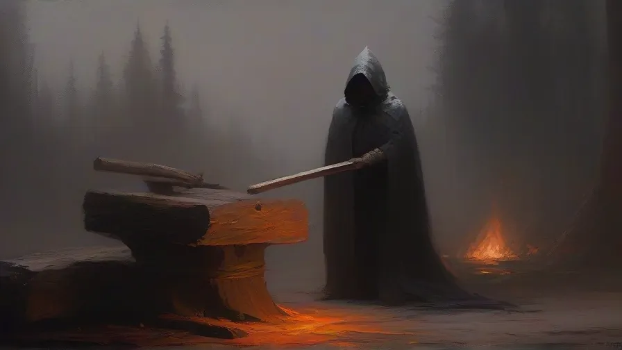
Morten the HeadsmanThe Last Sentence. An axe from above, a grab and the chains of the executed.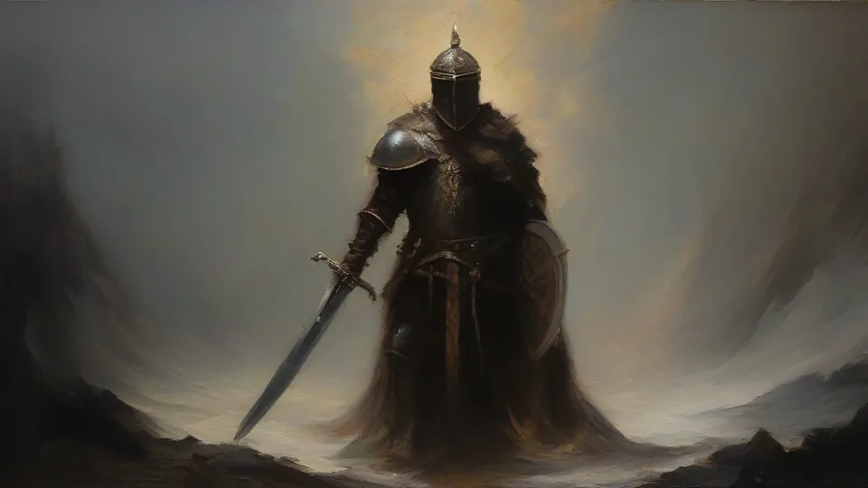
The Hollow KingAurel on the Pale Throne. The Flame hides in the braziers — snuff them.Sections
- Getting started: Beginner's Guide, The First Hour, Controls, Frequently Asked Questions.
- Combat: Combat, Reading Blows, Parry, Roll and Backstep, Packs and Camps, Difficulty.
- Gear: Weapons, Rings, Cloaks, Keepers' Keepsakes.
- World: Worlds, Enemies, Characters, Codex.
- Story (spoilers): The Story of Ashen Path, Branch A — “Take the sword”, Branch B — “Stand against him”, Endings.